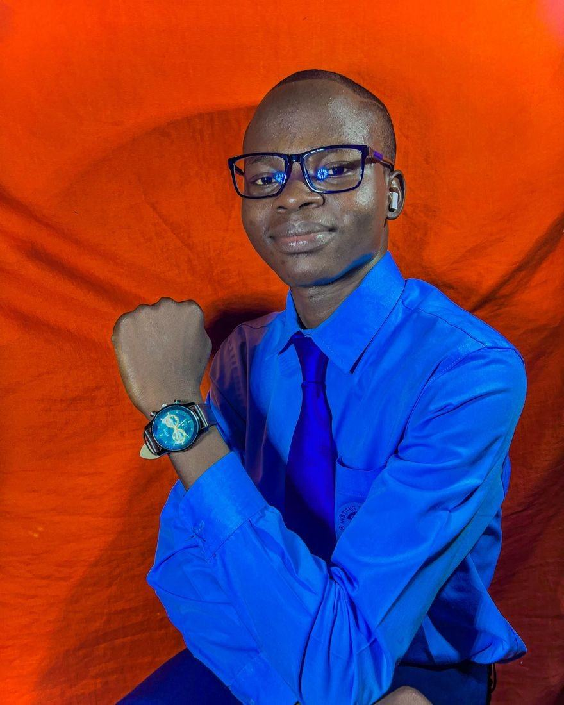
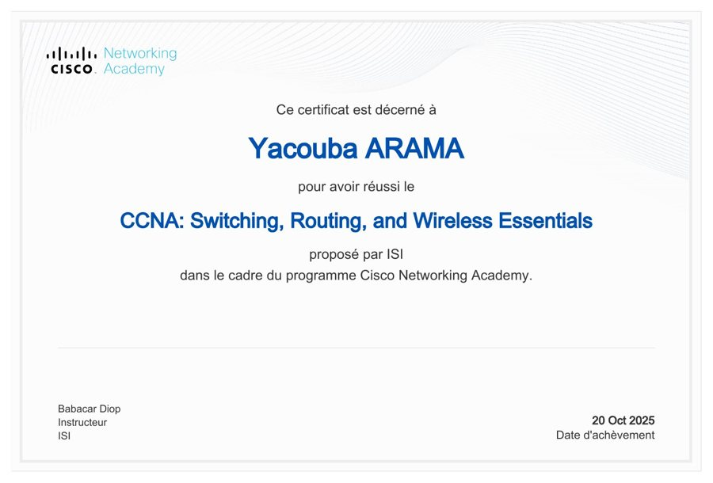
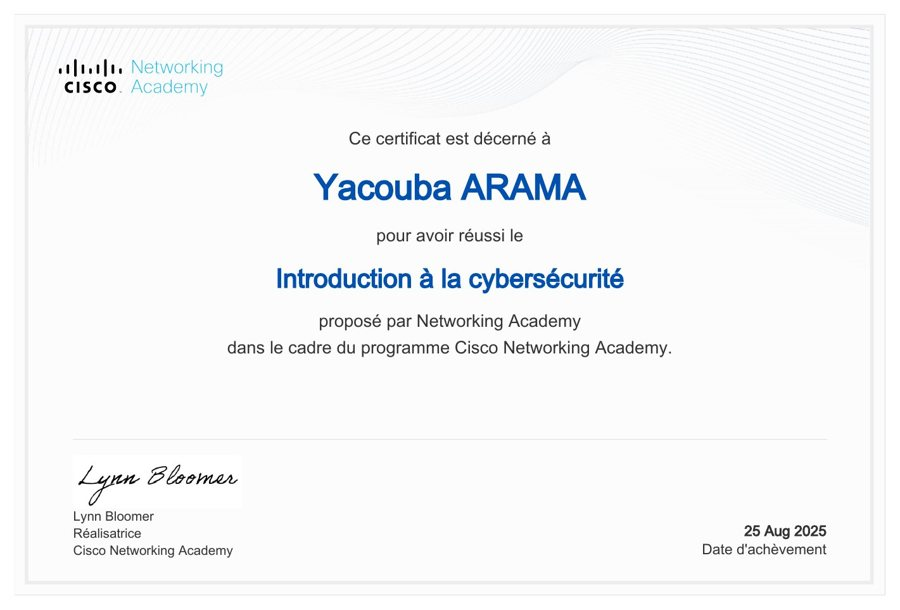

Disponible dès maintenant · stage ou premier emploi
Réseaux.Sécurité.Design.
Je m'appelle Yacouba Arama. Technicien supérieur en cybersécurité et administrateur systèmes et réseaux, j'installe, je sécurise et je surveille des infrastructures. Avec mon studio Arama Design, je crée aussi des logos et des affiches.

- Formation
- Licence 3 Réseaux informatiques, ISI Keur Massar
- Diplôme
- BTS Cybersécurité, obtenu en 2026
- Certifications
- Cisco CCNA 1, CCNA 2, Introduction à la cybersécurité
- Langues
- Français, anglais, bambara, wolof, dogon
Métier
Trois façons de vous être utile.
Je travaille sur toute la chaîne : le réseau qui transporte, les serveurs qui rendent le service, la sécurité qui protège, et l'image qui présente le tout.
Administrer
Je monte et je maintiens des serveurs Windows et Linux : annuaire, messagerie, web, virtualisation. Quand un service tombe, je cherche la cause et je la corrige.
Windows Server, Active Directory, GPO, Debian, Ubuntu, AlmaLinux, CentOS, Postfix, Dovecot, LDAP, Nginx, Apache, Proxmox, VMware, VirtualBox, Zabbix, Nagios, Cisco Packet Tracer, GNS3, câblage RJ45
Sécuriser
Je découpe les réseaux en zones, je filtre les flux, je détecte les intrusions, puis j'audite mon propre travail comme le ferait un attaquant.
pfSense, FortiGate, VPN IPsec, Suricata, Wazuh, FreeRADIUS, OpenSSL, nmap, OWASP ZAP, Metasploit, ISO 27001, Cisco CCNA
Concevoir
J'automatise des déploiements et je conçois des identités visuelles. Les deux demandent la même chose : de la méthode et le souci du détail.
Docker, GitHub Actions, AWS, Python, Java, C, PHP, MySQL, Oracle Database, WordPress, Photoshop, Canva, CapCut, PixelLab, Framer, Scrum
Labo interactif
Mon infrastructure, en direct.
L'infrastructure de mon projet de fin d'études, telle que je l'ai montée. Cliquez sur un équipement pour voir son rôle et ce qui le protège, ou lancez un scénario rejoué à partir de mes tests réels.
Travaux choisis
Construit, cassé, réparé, documenté.
Des laboratoires complets, montés de A à Z, avec des pannes réelles à résoudre. Ouvrez une ligne pour lire le détail.
Autres projets
Certifications
Des compétences certifiées.
Trois parcours de la Cisco Networking Academy, suivis à l'ISI et en ligne, en complément de mon BTS en cybersécurité. Cliquez sur un certificat pour ouvrir l'original.

Cisco Networking AcademyCCNA : Switching, Routing and Wireless EssentialsCCNA 2 · ISI · 20 oct. 2025Voir le certificat (PDF) ↗
Cisco Networking AcademyIntroduction à la cybersécuritéCisco Networking Academy · 25 août 2025Voir le certificat (PDF) ↗ Cisco Networking AcademyCCNA : Présentation des réseauxCCNA 1 · ISI · 24 mars 2025Voir le certificat (PDF) ↗
Cisco Networking AcademyCCNA : Présentation des réseauxCCNA 1 · ISI · 24 mars 2025Voir le certificat (PDF) ↗
Notes techniques
Ce que j'ai appris en le faisant.
Des notes courtes tirées de mes projets : le principe, la mise en œuvre, les mesures réelles et les pièges rencontrés.
Toutes les notes →Le côté atelier.
Mon studio de design graphique. Je réalise des logos, des affiches et des flyers événementiels pour des clients, de la première idée au fichier d'impression.
Étude de cas : l'identité d'Arama Design →Travailler avec Arama Design
Un commerce, un événement, une association ? Je conçois une image claire, prête pour l'impression et pour les réseaux sociaux.
Logo et identité visuelle
- Logo principal et déclinaisons : horizontale, monochrome, icône
- Couleurs et polices définies pour toute votre communication
- Fichiers pour l'impression et pour le web
Affiches et flyers
- Événements, promotions, menus, annonces
- Format impression et format réseaux sociaux
- Fichier prêt à envoyer à l'imprimeur
Faire-part et affiches personnalisées
- Mariages, anniversaires et cérémonies
- Détourage et retouche de vos photos
- Versions pour WhatsApp et pour l'impression
Comment ça se passe
- BriefVous me décrivez votre projet, votre public et vos goûts.
- PropositionJe vous présente une première version.
- AjustementsOn affine ensemble jusqu'à votre validation.
- LivraisonVous recevez les fichiers finaux, prêts à l'emploi.
Parcours
De Sévaré à Dakar.
Une première licence en géographie m'a appris à lire des systèmes complexes. Je fais aujourd'hui la même chose avec des réseaux.
Engagements
Équipe de 7 personnes pendant 4 semaines : backlog Jira, sprints, suivi et déblocages.
Studio de design graphique : logos, affiches, flyers pour des clients.
Bureau de l'association : réunions, planning et suivi des tâches.
Langues
- Français
- Courant
- Anglais
- Intermédiaire, technique
- Bambara
- Courant
- Wolof
- Conversation
- Dogon (Tommo So)
- Langue maternelle
Atouts
- Autonomie et rigueur
- Esprit d'équipe
- Adaptabilité
- Calme face aux situations complexes
- Esprit d'analyse
- Gestion du temps et des priorités
- Communication claire
BureautiqueWordExcel (tableaux automatisés)PowerPoint
Loisirs
Recommandations
Ils ont travaillé avec moi.
Des encadrants et des coéquipiers qui m'ont vu travailler sur des projets concrets.
Contact
Parlons-en.
Je cherche un stage ou un premier poste en administration systèmes et réseaux, en supervision ou en cybersécurité, à Dakar ou ailleurs en Afrique de l'Ouest. Téléchargez mon CV ci-dessous ou écrivez-moi directement.